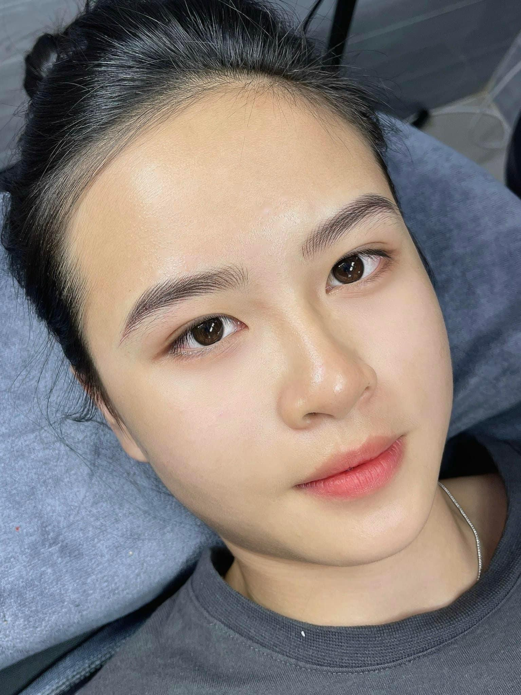

Phun mày hay điêu khắc chân mày? Cách chọn phương pháp hợp khuôn mặt

Nhiều khách khi bắt đầu tìm hiểu phun xăm thẩm mỹ thường phân vân giữa phun mày và điêu khắc chân mày. Cả hai đều giúp gương mặt rõ nét hơn, nhưng hiệu ứng sau làm, độ bền màu và mức độ phù hợp với từng loại da lại không giống nhau.
Phun mày là gì?
Phun mày là kỹ thuật dùng máy chuyên dụng đưa mực vào lớp thượng bì để tạo hiệu ứng màu mềm, đều và có độ phủ. Tùy nhu cầu, kỹ thuật viên có thể tư vấn phun mày tán bột, ombre, nano hoặc hiệu ứng sợi.
Phun mày thường phù hợp với khách có chân mày thưa, thiếu đuôi, màu lông mày nhạt hoặc muốn hiệu ứng trang điểm nhẹ mỗi ngày. Với người có da dầu, phun mày thường ổn định hơn điêu khắc vì màu có độ phủ tốt hơn.
Điêu khắc chân mày là gì?
Điêu khắc chân mày dùng lưỡi dao siêu mảnh để tạo từng sợi giống lông mày thật. Khi làm đúng nền mày, hiệu ứng rất tự nhiên, nhìn gần vẫn mềm và không bị cảm giác tô màu.
Kỹ thuật này hợp nhất với khách đã có lông mày tương đối, chỉ thiếu một vài vùng cần bổ sung sợi. Nếu chân mày quá thưa hoặc da quá dầu, sợi điêu khắc có thể nhanh mờ hơn và không giữ được độ sắc như mong muốn.
Nên nghiêng về phun mày nếu
- Da dầu hoặc dễ đổ mồ hôi.
- Chân mày thưa, nhạt, thiếu dáng rõ.
- Muốn hiệu ứng đều màu, dễ chăm sóc.
- Thích vẻ gọn gàng như đã trang điểm nhẹ.
Nên nghiêng về điêu khắc nếu
- Da thường hoặc da khô.
- Đã có sẵn lông mày nền tương đối.
- Muốn từng sợi tự nhiên, mềm mại.
- Không thích hiệu ứng phủ màu quá rõ.
So sánh phun mày và điêu khắc chân mày
| Tiêu chí | Phun mày | Điêu khắc chân mày |
|---|---|---|
| Hiệu ứng | Mềm, đều màu, rõ dáng hơn. | Từng sợi tự nhiên, nhìn gần mềm. |
| Phù hợp | Hầu hết khách, nhất là mày thưa hoặc da dầu. | Khách có nền mày sẵn, da thường hoặc da khô. |
| Độ bền | Thường ổn định hơn trên nhiều nền da. | Có thể nhanh mờ hơn nếu da dầu hoặc chăm sóc sai. |
| Cảm giác thẩm mỹ | Gọn gàng, như trang điểm nhẹ. | Tự nhiên, mô phỏng lông mày thật. |
Chọn theo khuôn mặt thế nào?
Ngoài kỹ thuật, dáng mày mới là phần quyết định gương mặt có hài hòa hay không. Mặt tròn thường nên chọn dáng có độ cong nhẹ để tạo cảm giác thon hơn. Mặt dài nên tránh đỉnh mày quá cao vì dễ làm mặt trông dài thêm. Mặt vuông hợp dáng mày mềm, không quá sắc để giảm cảm giác cứng.
Vì vậy, khi tư vấn, ELLY không chỉ hỏi bạn muốn phun hay điêu khắc. Kỹ thuật viên sẽ xem khuôn mặt, nền lông mày, màu tóc, thói quen trang điểm và độ đậm bạn mong muốn trước khi chốt phương án.
Những hiểu lầm thường gặp
Điêu khắc luôn tự nhiên hơn phun mày?
Không hẳn. Điêu khắc đẹp khi nền da và nền lông mày phù hợp. Nếu da dầu hoặc chân mày quá thưa, phun mày tán bột nhẹ có thể cho kết quả hài hòa và bền hơn.
Phun mày dễ bị xanh đỏ?
Màu xanh đỏ thường liên quan đến mực, kỹ thuật và cách xử lý nền cũ. Với mực tốt, kỹ thuật phù hợp và chăm sóc đúng, màu mày sẽ ổn định và tự nhiên hơn.
Chỉ người trẻ mới nên làm chân mày?
Không đúng. Người trẻ thường thích hiệu ứng mềm, tự nhiên; khách trung niên lại cần dáng mày giúp mặt tươi và rõ nét hơn. Quan trọng là chọn độ đậm, dáng và kỹ thuật đúng.
Cách chăm sóc sau khi làm
- Giữ vùng chân mày sạch, không tự bóc lớp bong.
- Hạn chế để chân mày tiếp xúc nước trực tiếp trong những ngày đầu.
- Không tự thoa sản phẩm lạ khi chưa được hướng dẫn.
- Theo dõi quá trình bong và gửi hình cho kỹ thuật viên nếu thấy bất thường.
- Dặm màu đúng lịch nếu cần để dáng mày hoàn thiện hơn.
Câu hỏi thường gặp
Da dầu nên phun mày hay điêu khắc?
Da dầu thường nên ưu tiên phun mày hoặc kỹ thuật có độ phủ màu ổn định hơn. Điêu khắc trên da dầu có thể nhanh mờ hoặc sợi không sắc lâu.
Chân mày thưa quá có điêu khắc được không?
Có thể nhưng cần xem nền thật. Nếu thưa nhiều, phun mày tán bột hoặc phối hợp kỹ thuật có thể giúp dáng mày đầy và cân hơn.
Làm chân mày có bị già không?
Không nếu chọn dáng, màu và độ đậm phù hợp. Mày bị già thường do dáng quá sắc, màu quá đậm hoặc không hợp khuôn mặt.
Cần tư vấn trước khi đặt lịch?
Nếu bạn còn phân vân, hãy đặt lịch tư vấn để ELLY xem nền môi, dáng mày hoặc tình trạng hiện tại trước khi chốt dịch vụ.